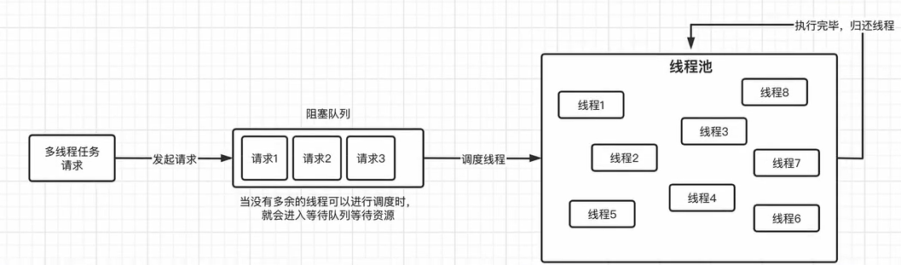

并发进阶

线程池
new Thread缺点：频繁创建和销毁，浪费了线程资源，短时间创建大量线程和销毁 线程池是有限可重复使用的线程，用完需要归还

//构造方法，含有七个参数
public ThreadPoolExecutor(int corePoolSize,//核心线程池大小
int maximumPoolSize,//最大线程池大小
long keepAliveTime,//线程最大空闲时间
TimeUnit unit,//最大空闲时间单位
BlockingQueue<Runnable> workQueue//线程等待队列，当超出最大容量时，任务进入等待队列) {
this(corePoolSize, maximumPoolSize, keepAliveTime, unit, workQueue,
Executors.defaultThreadFactory(),//线程创建工厂，可自定义
defaultHandler//拒绝策略，实在不能加入新的任务时，拒绝任务);
}
根据CPU类型分配线程池大小
ThreadPoolExecutor
public static void main(String[] args) throws InterruptedException {
ThreadPoolExecutor executor =
new ThreadPoolExecutor(2, 4, //2个核心线程，最大线程数为4个
3, TimeUnit.SECONDS, //最大空闲时间为3秒钟
new ArrayBlockingQueue<>(2)); //这里使用容量为2的ArrayBlockingQueue队列
for (int i = 0; i < 6; i++) { //开始6个任务
int finalI = i;
executor.execute(() -> {
try {
System.out.println(Thread.currentThread().getName()+" 开始执行！（"+ finalI);
TimeUnit.SECONDS.sleep(1);
System.out.println(Thread.currentThread().getName()+" 已结束！（"+finalI);
} catch (InterruptedException e) {
e.printStackTrace();
}
});
}
TimeUnit.SECONDS.sleep(1); //看看当前线程池中的线程数量
System.out.println("线程池中线程数量："+executor.getPoolSize());
TimeUnit.SECONDS.sleep(5); //等到超过空闲时间
System.out.println("线程池中线程数量："+executor.getPoolSize());
executor.shutdownNow(); //使用完线程池记得关闭，不然程序不会结束，它会取消所有等待中的任务以及试图中断正在执行的任务，关闭后，无法再提交任务，一律拒绝
//executor.shutdown(); 同样可以关闭，但是会执行完等待队列中的任务再关闭
}
}
ArrayBlockingQueue
作为有界的阻塞队列，具有响应的容量，可以自行设置，对比SynchronousQueue没有容量，选这个会出现爆栈的问题，原因 是线程池ThreadPoolExecutor发现容量超出时会poll线程，但SynchronousQueue没有容量poll无意义。 在线程池里面的等待队列需要具有容量。
线程池的拒绝策略
线程池超过最大的容量时，需要拒绝这个任务。
- AbortPolicy(default): 直接抛异常
- CallerRunsPolicy: 直接让提交任务的线程运行这个任务，如果向主线程提交了任务就让主线程去执行这个任务，谁提交谁执行
- DiscardOldestPolicy: 丢弃队列中最近的任务，替换为当前任务
- DiscardPolicy: Do nothing
自定义拒绝策略和线程生产工厂
任务过程出现异常，线程池当中执行任务时发生异常，线程将会自动销毁
ExecutorService
可以使用Executors工具类来快速创建线程池：
ExecutorService executor = Executors.newFixedThreadPool(2); //直接创建一个固定容量的线程池
ExecutorService本质内部实现其实是ThreadPoolExecutor，所以创建的线程都不是核心线程
//内部实现
public static ExecutorService newFixedThreadPool(int nThreads) {
return new ThreadPoolExecutor(nThreads, nThreads,
0L, TimeUnit.MILLISECONDS,
new LinkedBlockingQueue<Runnable>());
}
直接将最大线程和核心线程数量设定为一样的，并且等待时间为0，因为压根不需要，并且采用的是一个无界的LinkedBlockingQueue作为等待队列。
//创建单个线程
public static ExecutorService newSingleThreadExecutor() {
return new FinalizableDelegatedExecutorService
(new ThreadPoolExecutor(1, 1,
0L, TimeUnit.MILLISECONDS,
new LinkedBlockingQueue<Runnable>()));
}
这里并不是直接创建的一个ThreadPoolExecutor对象，而是套了一层FinalizableDelegatedExecutorService，目的是内部套了一层，外部不可见，不可修改，保证安全性
由于executorService内部直接最大容量为Integer. MAX_VALUE,非常大，不安全
newCachedThreadPool
注意生成的线程池里面都不是核心线程，同时最大容量非常大，需要慎用
执行带返回值的任务：
ExecutorService执行任务有两种方法：submit和execute
接受返回值的只有submit

public static void main(String[] args) throws InterruptedException, ExecutionException {
ExecutorService executorService=Executors.newSingleThreadExecutor();
Future<String> future= executorService.submit(()->{
TimeUnit.SECONDS.sleep(3);
return "你好世界";
});
System.out.println(future.cancel(true));//取消任务，这时候里面的字串将不会再返回出来
executorService.shutdown();
System.out.println(future.get());
}
定时任务ScheduledThreadPoolExecutor
ScheduledThreadPoolExecutor executor=new ScheduledThreadPoolExecutor(1);
// executor.schedule(()-> System.out.println("开始定时任务"),3,TimeUnit.SECONDS);
// ScheduledFuture<String> scheduledFuture=executor.schedule(()-> "开始定时任务",3,TimeUnit.SECONDS);
// System.out.println(scheduledFuture.isDone());
//固定频率进行定时计划：
executor.scheduleAtFixedRate(()-> System.out.println("hello!"),3,1,TimeUnit.SECONDS);
// executor.shutdown();
线程延迟线程池：ScheduledWithFixedDelay

protected void finalize() { //在GC时，会执行finalize方法，此方法中会关闭掉线程池，释放资源
super.shutdown();
}
线程池实现原理
//这个就是我们指定的阻塞队列
private final BlockingQueue<Runnable> workQueue;
//再次提醒，这里没加锁！！该有什么意识不用我说了吧，所以说ctl才会使用原子类。
public void execute(Runnable command) {
if (command == null)
throw new NullPointerException(); //如果任务为null，那执行个寂寞，所以说直接空指针
int c = ctl.get(); //获取ctl的值，一会要读取信息的
if (workerCountOf(c) < corePoolSize) { //判断工作线程数量是否小于核心线程数
if (addWorker(command, true)) //如果是，那不管三七二十一，直接加新的线程执行，然后返回即可
return;
c = ctl.get(); //如果线程添加失败（有可能其他线程也在对线程池进行操作），那就更新一下c的值
}
if (isRunning(c) && workQueue.offer(command)) { //继续判断，如果当前线程池是运行状态，那就尝试向阻塞队列中添加一个新的等待任务
int recheck = ctl.get(); //再次获取ctl的值
if (! isRunning(recheck) && remove(command)) //这里是再次确认当前线程池是否关闭，如果添加等待任务后线程池关闭了，那就把刚刚加进去任务的又拿出来
reject(command); //然后直接拒绝当前任务的提交（会根据我们的拒绝策略决定如何进行拒绝操作）
else if (workerCountOf(recheck) == 0) //如果这个时候线程池依然在运行状态，那么就检查一下当前工作线程数是否为0，如果是那就直接添加新线程执行
addWorker(null, false); //添加一个新的非核心线程，但是注意没添加任务
//其他情况就啥也不用做了
}
else if (!addWorker(command, false)) //这种情况要么就是线程池没有运行，要么就是队列满了，按照我们之前的规则，核心线程数已满且队列已满，那么会直接添加新的非核心线程，但是如果已经添加到最大数量，这里肯定是会失败的
reject(command); //确实装不下了，只能拒绝
}
addWorker实现
private boolean addWorker(Runnable firstTask, boolean core) {
//这里给最外层循环打了个标签，方便一会的跳转操作
retry:
for (;;) { //无限循环，老套路了，注意这里全程没加锁
int c = ctl.get(); //获取ctl值
int rs = runStateOf(c); //解析当前的运行状态
// Check if queue empty only if necessary.
if (rs >= SHUTDOWN && //判断线程池是否不是处于运行状态
! (rs == SHUTDOWN && //如果不是运行状态，判断线程是SHUTDOWN状态并、任务不为null、等待队列不为空，只要有其中一者不满足，直接返回false，添加失败
firstTask == null &&
! workQueue.isEmpty()))
return false;
for (;;) { //内层又一轮无限循环，这个循环是为了将线程计数增加，然后才可以真正地添加一个新的线程
int wc = workerCountOf(c); //解析当前的工作线程数量
if (wc >= CAPACITY ||
wc >= (core ? corePoolSize : maximumPoolSize)) //判断一下还装得下不，如果装得下，看看是核心线程还是非核心线程，如果是核心线程，不能大于核心线程数的限制，如果是非核心线程，不能大于最大线程数限制
return false;
if (compareAndIncrementWorkerCount(c)) //CAS自增线程计数，如果增加成功，任务完成，直接跳出继续
break retry; //注意这里要直接跳出最外层循环，所以用到了标签（类似于goto语句）
c = ctl.get(); // 如果CAS失败，更新一下c的值
if (runStateOf(c) != rs) //如果CAS失败的原因是因为线程池状态和一开始的不一样了，那么就重新从外层循环再来一次
continue retry; //注意这里要直接从最外层循环继续，所以用到了标签（类似于goto语句）
// 如果是其他原因导致的CAS失败，那只可能是其他线程同时在自增，所以重新再来一次内层循环
}
}
//好了，线程计数自增也完了，接着就是添加新的工作线程了
boolean workerStarted = false; //工作线程是否已启动
boolean workerAdded = false; //工作线程是否已添加
Worker w = null; //暂时理解为工作线程，别急，我们之后会解读Worker类
try {
w = new Worker(firstTask); //创建新的工作线程，传入我们提交的任务
final Thread t = w.thread; //拿到工作线程中封装的Thread对象
if (t != null) { //如果线程不为null，那就可以安排干活了
final ReentrantLock mainLock = this.mainLock; //又是ReentrantLock加锁环节，这里开始就是只有一个线程能进入了
mainLock.lock();
try {
// Recheck while holding lock.
// Back out on ThreadFactory failure or if
// shut down before lock acquired.
int rs = runStateOf(ctl.get()); //获取当前线程的运行状态
if (rs < SHUTDOWN ||
(rs == SHUTDOWN && firstTask == null)) { //只有当前线程池是正在运行状态，或是SHUTDOWN状态且firstTask为空，那么就继续
if (t.isAlive()) // 检查一下线程是否正在运行状态
throw new IllegalThreadStateException(); //如果是那肯定是不能运行我们的任务的
workers.add(w); //直接将新创建的Work丢进 workers 集合中
int s = workers.size(); //看看当前workers的大小
if (s > largestPoolSize) //这里是记录线程池运行以来，历史上的最多线程数
largestPoolSize = s;
workerAdded = true; //工作线程已添加
}
} finally {
mainLock.unlock(); //解锁
}
if (workerAdded) {
t.start(); //启动线程
workerStarted = true; //工作线程已启动
}
}
} finally {
if (! workerStarted) //如果线程在上面的启动过程中失败了
addWorkerFailed(w); //将w移出workers并将计数器-1，最后如果线程池是终止状态，会尝试加速终止线程池
}
return workerStarted; //返回是否成功
}
并发工具类
计数器锁（CountDownLatch）
多任务同步神器。它允许一个或多个线程，等待其他线程完成工作,典型应用场景：多个线程分段相加最后统计所有线程的和
要实现这个需求，那么有一个很麻烦的地方，我们不知道任务到底什么时候执行完毕，那么可否将最终统计延迟一定时间进行呢？但是最终统计无论延迟多久进行， 要么不能保证所有任务都完成，要么可能所有任务都完成了而这里还在等。
public static void main(String[] args) throws InterruptedException {
CountDownLatch latch=new CountDownLatch(20);
for (int i = 0; i < 20; i++) {
int finalI=i;
new Thread(()->{
try {
Thread.sleep((long) (2000 * new Random().nextDouble()));
System.out.println("任务"+finalI+"完成");
}catch (InterruptedException e){
e.printStackTrace();
}
latch.countDown(); //每执行一次计数器都会-1
}).start();
}
//开始等待所有的线程完成，当计数器为0时，恢复运行
latch.await(); //这个操作可以同时被多个线程执行，一起等待，这里只演示了一个
System.out.println("所有子任务都完成！任务完成！！！");
}
例子： 用四个线程实现对1到10000完成累计加和
public static void main(String[] args) throws InterruptedException {
long begin=System.currentTimeMillis();
CountDownLatch latch=new CountDownLatch(4);
int res[]=new int[4];
for (int i = 0; i < 4; i++) {
int finalI=i;
new Thread(()->{
int sum=0;
int numbersPerThread = (int) Math.ceil((double) 100/ 4);
int startNumber = finalI * numbersPerThread + 1;
int endNumber = (finalI + 1) * numbersPerThread;
for (int j =startNumber ; j <=endNumber; j++) {
sum+=j;
}
System.out.println(sum);
res[finalI]=sum;
latch.countDown(); //每执行一次计数器都会-1
}).start();
}
//开始等待所有的线程完成，当计数器为0时，恢复运行
latch.await(); //这个操作可以同时被多个线程执行，一起等待，这里只演示了一个
int result=0;
for (Integer integer:res) {
result+=integer;
}
long end=System.currentTimeMillis();
System.out.println("所有子任务都完成！任务完成,结果是"+result+"花费时间："+(end-begin)+"ms");
}
实现效果：

- 共享锁是线程共享的，同一时刻能有多个线程拥有共享锁。
- 如果一个线程刚获取了共享锁，那么在其之后等待的线程也很有可能能够获取到锁，所以得传播下去继续尝试唤醒后面的结点，不像独占锁，独占的压根不需要考虑这些。
- 如果一个线程刚释放了锁，不管是独占锁还是共享锁，都需要唤醒后续等待结点的线程。
实现原理：
在工具构建的时候创建多个共享锁，调用countDown（）调用时就可以减去一把锁，当state减为0时即可获取共享锁，实现方式是通过 链表向后继节点一个个从等待状态唤醒
循环屏障CyclicBarrier
循环屏障会不断阻挡线程，直到被阻挡的线程足够多时，才能一起冲破屏障，并且在 冲破屏障时，我们也可以做一些其他的任务。这和人多力量大的道理是差不多的，当人足够多时方能冲破阻碍， 到达美好的明天。当然，屏障由于是可循环的，所以它在被冲破后，会重新开始计数，继续阻挡后续的线程：
CyclicBarrier barrier = new CyclicBarrier(5); //创建一个初始值为5的循环屏障
屏障最大容量：parties 特点：等待线程冲破阻碍的时候才可以 一起完成任务，完成任务之后继续等待，直到下一次达到最大值 。
当await状态下的线程被中断，屏障将会被破坏，这一轮不能使用，除非重新开始
信号量 Semaphore
限制信号容量，在一段任务中，要求 只能部分线程完成这段工作的时候完成
线程之间进行数据交换 Exchanger
实现两个线程之间进行数据交换的通信，只有当两个线程完成交换之后才可以完成任务，否则线程阻塞。
Fork/Join框架
ForkJoinPool pool = new ForkJoinPool();
- fork指的是划分任务，任务约分越细
- join指的是加入任务，任务开始执行